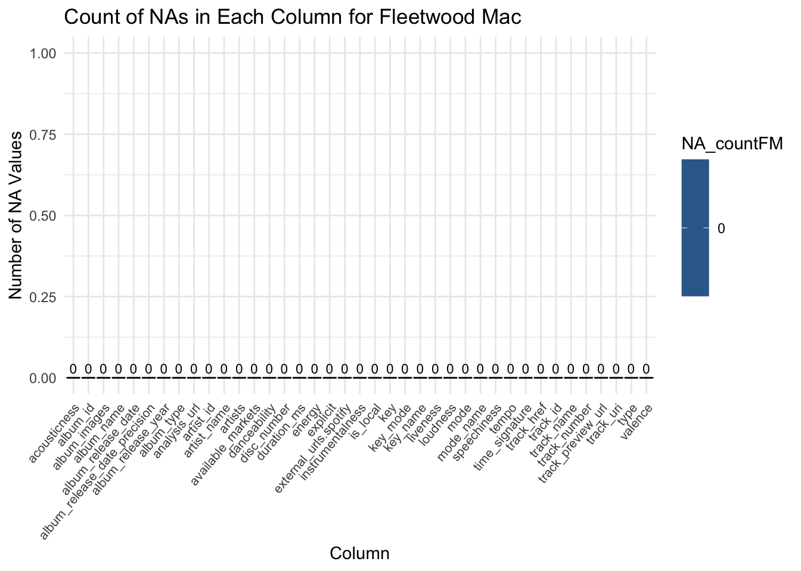
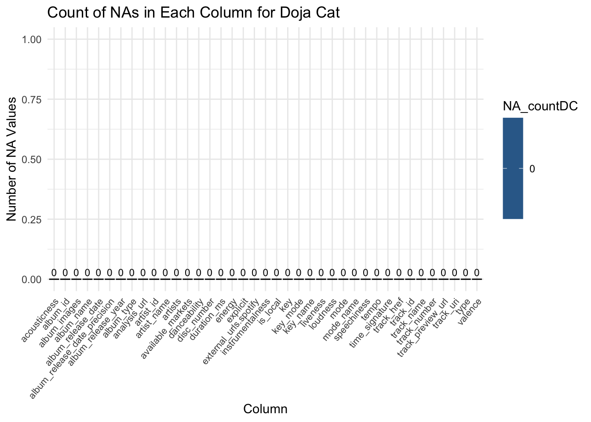

We will be accessing the Spotify Web API that provides us to a vast collection of music-related data. This could include information about tracks, albums, artists, and user-specific information. This data is collected and maintained by Spotify, a leading music streaming platform. Thus, we are assuming that Spotify is able to update the API frequently. There are not any obvious issues or problems with the data. We plan to retrieve data through the “spotifyr” R wrapper for pulling track audio features and other information from Spotify’s Web API in bulk (Thompson, Et al., 2022). The authors are Josia Parry, Donal Phipps, Tom Wolf, and Charlie Thompson, who also maintains the package. According to Thomposon’s Github, the last changes are from December 14, 2022.
Even Oppenheimer completed a project called “Using Data to Find the Angriest Death Grips Song“ (Oppenheimer, 2022). We plan to follow this procedure in tandem with the valence and energy variables from the “spotifyr” R wrapper to analyze the moods of the songs. Our current concern is that Oppenheimer uses an r package, ‘genius,’ written by Josiah Parry with ’tidytext” by Julia Slige to count the number of angry words that are in songs. “genuis” package allows easy access to lyrics as text data, however, Parry announced on October 31, 2021, that he will not be maintaining the package due to the gray legal area (Parry, 2023) . On the other hand, “tidytext” was recently updated on September 5, 2023.
2.2 Description
Comparative Analysis of Top Tracks:
The Spotify Web API provides access to user-specific data, including the top tracks for each user. By querying the API for both partners, we can retrieve information on their individual top tracks. The data includes details such as track name, artist, album, and popularity. Through the Spotify R package, we can seamlessly compare the top tracks, identifying commonalities and differences in musical preferences. Using the get_my_top_tracks function from the “spotifyr,” we can get the top tracks from each user. We can extract relevant details such as track name, artist, and album and save it to a data frame and visualize it.
Exploring Album Moods:
Leveraging the Spotify API’s audio features, particularly valence and energy, we can analyze the mood dynamics of artists’ albums. Valence represents the musical positiveness, while energy represents the intensity and activity. By aggregating these features at the album level, we gain insights into the overall emotional content of each album. The Spotify R package allows us to efficiently extract and process this information, enabling us to explore patterns and themes in the emotional landscape of diverse artists. By utilizing the get_audio_features function from the “spotifyr,” we can obtain the valence and energy features for each track. Then. we can aggregate these features at the album level to represent the overall mood. Lastly, we can analyze patterns and trends in mood dynamics across different artists’ albums.
Lyrics and Emotional Expression:
The Genius R package provides access to song lyrics, allowing us to perform sentiment analysis and explore emotional expression in the lyrics of selected songs. By querying the Genius API through the “genuis” R package, we can retrieve lyrics for specific tracks of interest. Combining this textual data with the emotional features obtained from the Spotify API, we can deepen our understanding of how lyrics contribute to the overall emotional depth and resonance of the music. We can query the Genius API through the “genuis” to retrieve lyrics for selected tracks. Then we can perform sentiment analysis on the lyrics to quantify emotional expression based on the number of “angry” words identified by NRC’s standards with the help of “tidytext”.
By executing these data-driven analyses, we should be able to identify shared musical preferences and unique individual tastes based on top track analysis and visualize the emotional dynamics within albums, offering insights into how artists convey mood through their music. Our project aims to contribute meaningful insights into the intricate relationship between personal music preferences, emotional resonance, and the broader artistic expression found within the world of music.
2.3 Missing value analysis
Code
library(spotifyr)library(dplyr)
Attaching package: 'dplyr'
The following objects are masked from 'package:stats':
filter, lag
The following objects are masked from 'package:base':
intersect, setdiff, setequal, union
── Conflicts ────────────────────────────────────────── tidyverse_conflicts() ──
✖ dplyr::filter() masks stats::filter()
✖ dplyr::lag() masks stats::lag()
ℹ Use the conflicted package (<http://conflicted.r-lib.org/>) to force all conflicts to become errors
# For Taylor Swift TS <-get_artist_audio_features('taylor swift')NA_countsTS <-colSums(is.na(TS))na_dataTS <-data.frame(column =names(NA_countsTS), NA_countTS = NA_countsTS)ggplot(na_dataTS, aes(x = column, y = NA_countTS, fill = NA_countTS)) +geom_bar(stat ="identity", color ="black") +labs(title ="Count of NAs in Each Column for Taylor Swift", x ="Column", y ="Number of NA Values") +theme_minimal() +theme(axis.text.x =element_text(size =8, angle =50, hjust =1)) +geom_text(aes(label = NA_countTS), vjust =-0.5, size =3)
Code
# For Fleetwood MacFM <-get_artist_audio_features('fleetwood mac')NA_countsFM <-colSums(is.na(FM))na_dataFM <-data.frame(column =names(NA_countsFM), NA_countFM = NA_countsFM)ggplot(na_dataFM, aes(x = column, y = NA_countFM, fill = NA_countFM)) +geom_bar(stat ="identity", color ="black") +labs(title ="Count of NAs in Each Column for Fleetwood Mac", x ="Column", y ="Number of NA Values") +theme_minimal() +theme(axis.text.x =element_text(size =8, angle =50, hjust =1)) +geom_text(aes(label = NA_countFM), vjust =-0.5, size =3)

Code
# For Doja CatDC <-get_artist_audio_features('doja cat')NA_countsDC <-colSums(is.na(DC))na_dataDC <-data.frame(column =names(NA_countsDC), NA_countDC = NA_countsDC)ggplot(na_dataDC, aes(x = column, y = NA_countDC, fill = NA_countDC)) +geom_bar(stat ="identity", color ="black") +labs(title ="Count of NAs in Each Column for Doja Cat", x ="Column", y ="Number of NA Values") +theme_minimal() +theme(axis.text.x =element_text(size =8, angle =50, hjust =1)) +geom_text(aes(label = NA_countDC), vjust =-0.5, size =3)

Code
# For Peso PlumaPP <-get_artist_audio_features('peso pluma')View(PP)NA_countsPP <-colSums(is.na(PP))na_dataPP <-data.frame(column =names(NA_countsPP), NA_countPP = NA_countsPP)ggplot(na_dataPP, aes(x = column, y = NA_countPP, fill = NA_countPP)) +geom_bar(stat ="identity", color ="black") +labs(title ="Count of NAs in Each Column for Peso Pluma", x ="Column", y ="Number of NA Values") +theme_minimal() +theme(axis.text.x =element_text(size =8, angle =50, hjust =1)) +geom_text(aes(label = NA_countPP), vjust =-0.5, size =3)